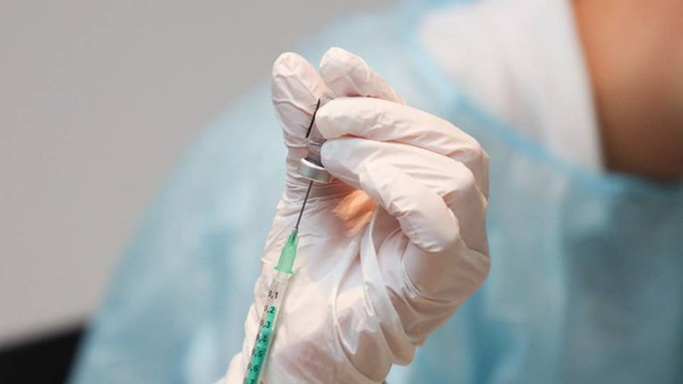

Empezó la vacunación Verónica machado la primera en ser vacunada
Veronica la cual fue la primera en ser vacunada en colombia recibio su dosis en la ciudad de sincelejo hoy a las 9:17am la cual fue vacunada por la jefa del hospital universitario de sincelejo(sucre) la cual trabaja en el lugar de cuidados intensivos en este lugar fue aplicada la primera dosis de las 50.000 que habian sido enviadas este lunes el fin de semana seran enviadas muchos mas vacunas en la tarde del dia miercoles sera vacunada la segunda persona en monteria la señora clara ines patiño Fernández

Efectos secuandarios de la vacuna del covid
Aunque la vacuna del covid sea lo que nos salvara tiene sus efectos secuandarios(leves) uno de ellos seria que este obstruirá las celulas humanas haciendo que se creen unas vitaminas artificiales y unos de los mas comunes serian en el brazo que recibirias la vacuna sentirias Dolor e Hinchazon y en el resto de tu cuerpo sentirias Fiebre,Escalofrios,cansancio y Dolor de cabeza probablemente podrias llegar a no poder ealizar tus actividades pero estos efectos deberian de desaparecer al cabo de unos días